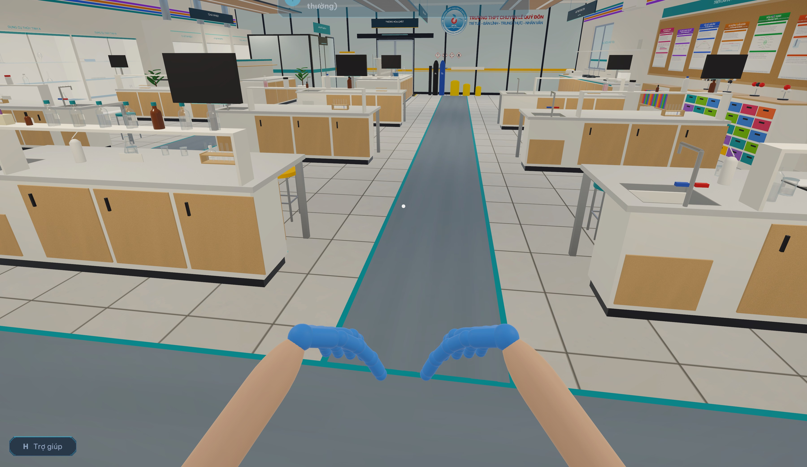
Thao tácrót, nhỏ giọt, đun, lắp dụng cụ
Thành phần mẫulưu theo số mol từng chất
Bộ máy phản ứngbảo toàn khối lượng, pH, tích số tan, oxi hóa – khử
Kết quảhiện tượng, số liệu máy, cảnh báo khi sai
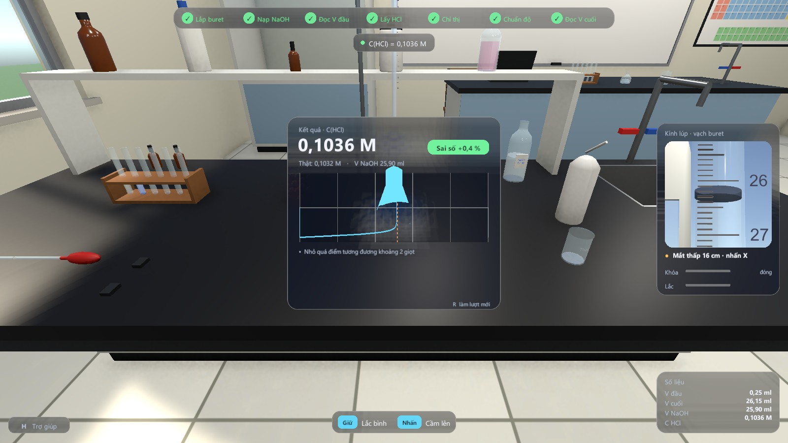
TỰ TÍNH KẾT QUẢ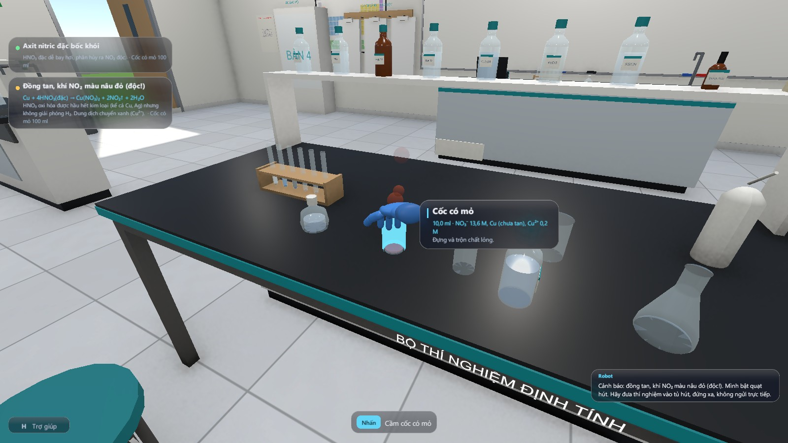
CẢNH BÁO ĐỘC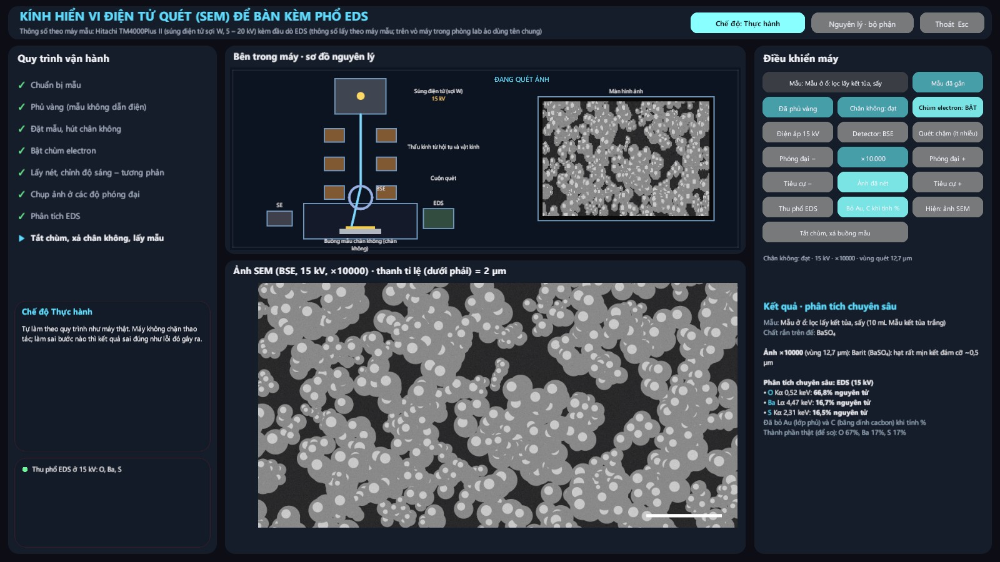
MÁY PHÂN TÍCH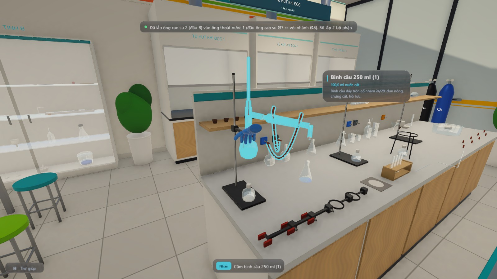
TỰ LẮP RÁPMáy phân tích dùng đúng nguyên lý vật lý: Beer – Lambert (UV-Vis, AAS), biến đổi Fourier (FTIR, NMR), định luật Bragg (XRD), IAPWS-IF97 (nồi hấp). Hóa học và Sinh học dùng chung một lõi: enzim catalase ở tầng 2 chạy trên bộ máy hóa học của tầng 1.
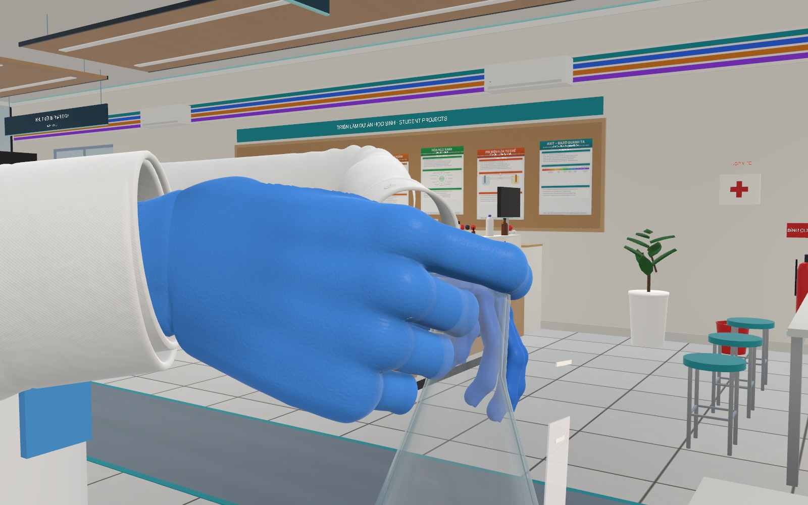
WEBCAM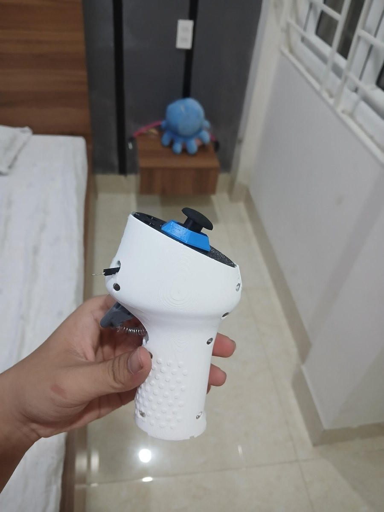
VERA BAND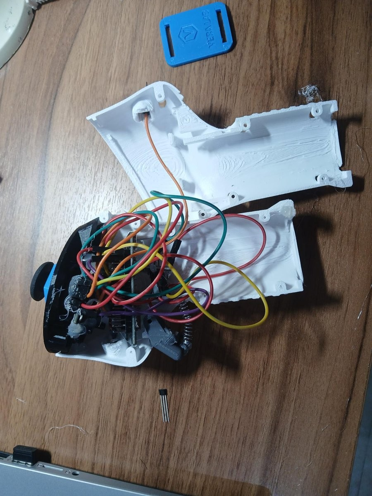
| Thao tác thật | Bộ phận đo | Trong VERA Lab |
|---|---|---|
| Chụm hai ngón · xòe tay | Webcam (MediaPipe) | Lấy · đặt vật |
| Xoay cổ tay | Cảm biến quán tính BMI160 | Xoay tay, tia trỏ |
| Bóp cò | Cảm biến Hall + nam châm | Cầm, rót, bơm |
| Đẩy cần gạt | Joystick 2 trục | Đi lại trong lab |
VERA Band do nhóm tự vẽ, in 3D và lập trình (thế hệ thứ 5): đeo qua mu bàn tay, thả lỏng không rơi; ESP32 tính hướng ngay trên mạch, gửi 100 gói/giây qua Wi-Fi hoặc USB.
Học sinh hỏi bằng tiếng Việt hoặc nhờ robot làm mẫu
AI tra tài liệu (RAG) rồi lập kế hoạch từ kỹ năng có sẵn của robot
Bộ kiểm tra duyệt từng bước: loại bước sai chất, sai dụng cụ, mất an toàn
Robot làm mẫu, học sinh xem rồi tự làm lại
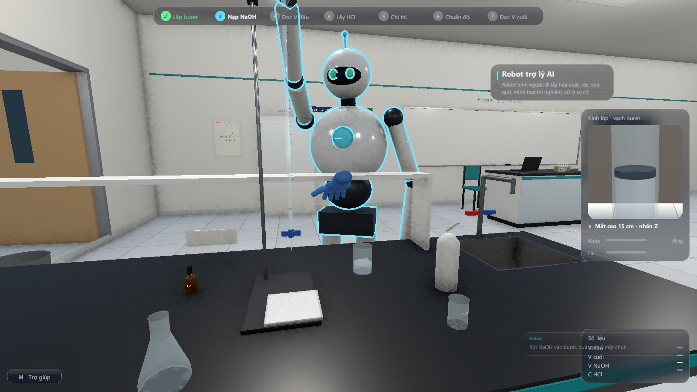
ROBOT TRỢ LÝAI không điều khiển trực tiếp lab: chỉ trả về kế hoạch có cấu trúc. Khóa dịch vụ AI nằm ở máy chủ; giáo viên khóa được trợ lý của cả lớp khi kiểm tra.
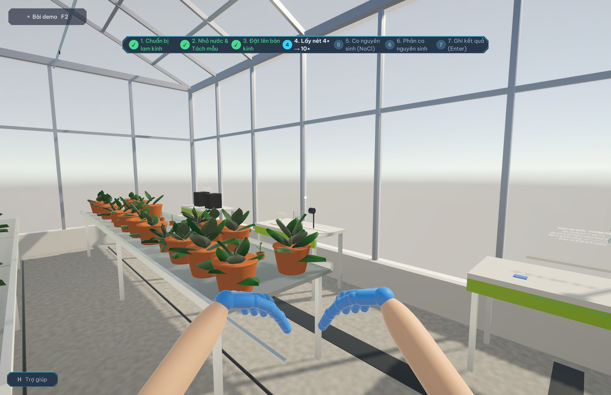
TẦNG 2 · SINH HỌC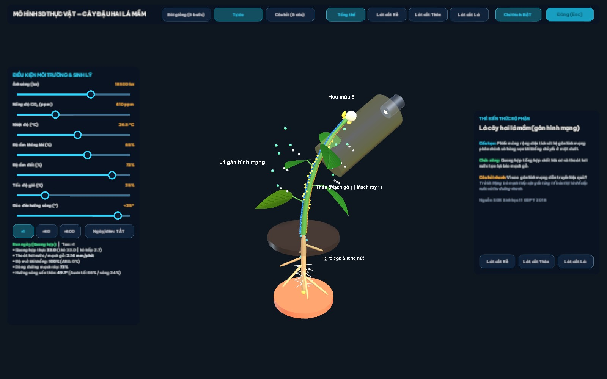
MÔ HÌNH CÂY 3D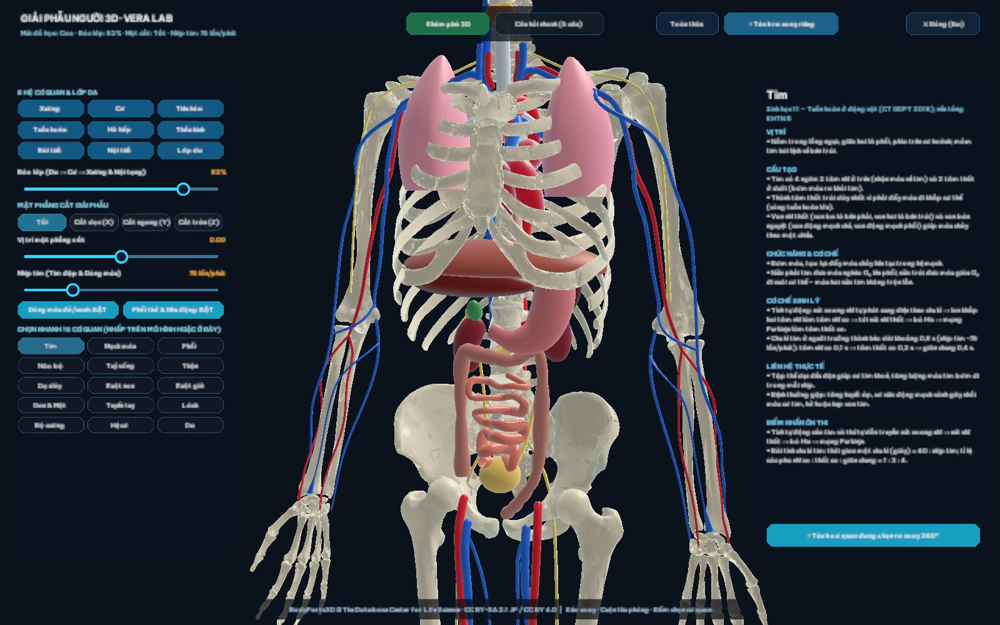
GIẢI PHẪU NGƯỜI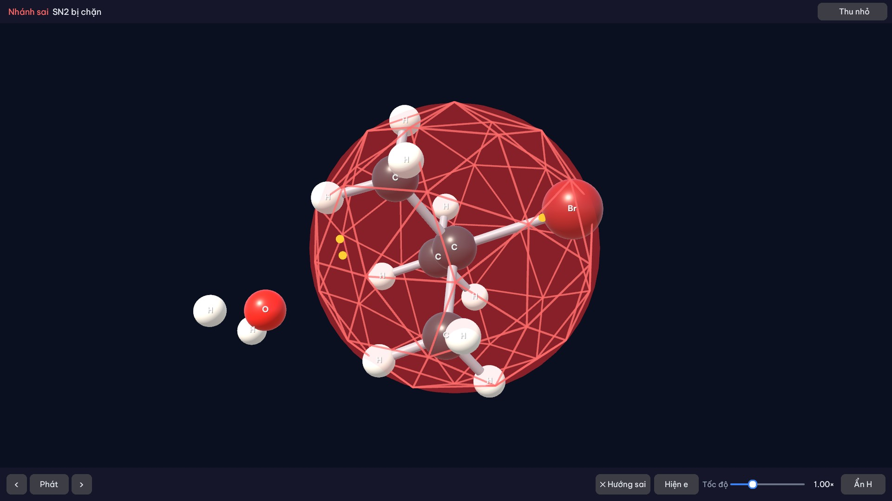
CƠ CHẾ 3D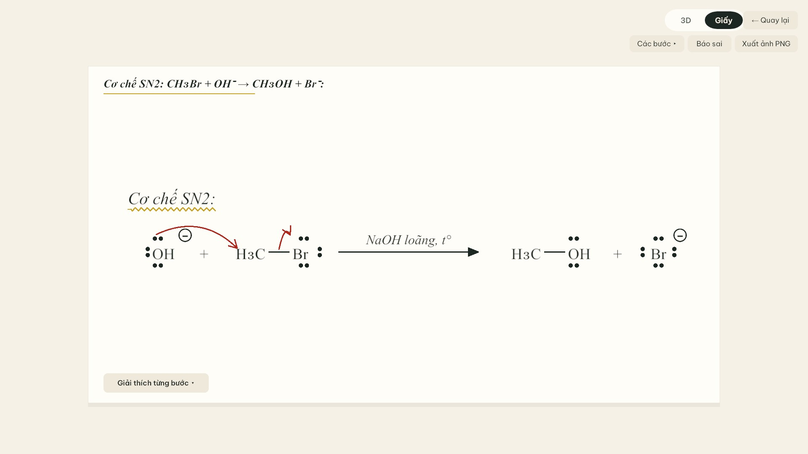
CƠ CHẾ GIẤY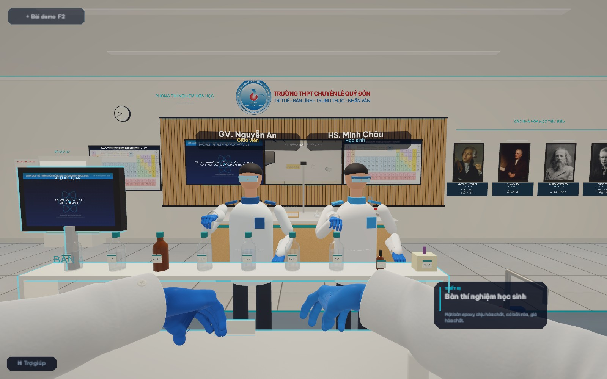
PHÒNG HỌC CHUNG